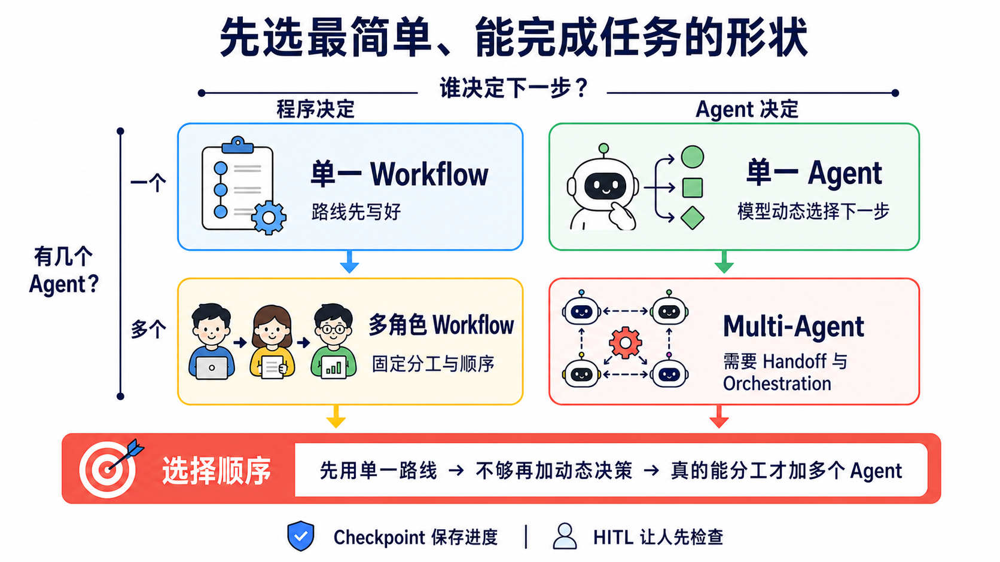

原课程本地核对资料，保留原内容与顺序。外链已改为本地阅读入口。命令中的原仓库路径请按本课运行指南换成实际位置；版本差异见本课说明。MIT © 2026 Wenyu Chiou。
Stage 4 — Workflow Graph 与 Agent 框架
你在 Stage 3 已经自己写过 Agent Loop。这一关先把多步工作画成 Workflow Graph，再选 Framework（框架） 来帮你接线。先看懂工作地图，再选工具箱，才不会因为某个框架很流行就硬把事情变复杂。
📌 学习目标
完成这一关后，你可以：
- 用自己的话分清 Agent Loop、Workflow Graph、Agent framework 与多角色系统。
- 先选最简单能完成任务的工具，不为了流行硬加角色。
- 跑完五个练习，亲手比较 LangGraph、CrewAI、Smolagents 与 Pydantic AI。
- 说出交接、存档与人工批准各自解决什么问题。
🧩 先认识八个核心词
- Workflow（工作流程）／Workflow Graph（工作流程图）：像照食谱做菜，再把每一步和下一站画出来。程序先写好 node、edge 与分支，模型只完成其中需要判断的工作。
- Framework（框架）：一盒已经整理好的积木。它帮你接好循环、工具、记录与错误处理；但盒子越大，藏起来的细节也越多。
- Agent（智能体）：像拿到目标的助手。模型可以根据当前结果决定下一步，但真正的权限、验证与停止条件仍由程序控制。
- Orchestration（编排）：像交通指挥。它安排谁先做、谁后做、数据交给谁，以及失败时怎么回来。
- State（状态）：像工作中的笔记本。它记住当前输入、工具结果、进度与下一步需要的数据。
- Checkpoint（检查点）：像游戏存档。流程中断后，可以从已保存的位置继续，不必全部重来。
- Handoff（交接）：像把工作单交给另一位同学。新的 Agent 接手后，需要拿到足够背景，也不能得到不需要的权限。
- Human-in-the-loop（HITL，人在循环中）：像先举手请老师看。程序在花钱、寄信、删除数据或发布前暂停，等人批准才继续。
🧭 先分清：Loop、Graph 与 Framework
| 名称 | 五岁也懂的说法 | 正确边界与学习位置 |
|---|---|---|
| Agent Loop | 助手做一步、看结果，再决定下一步 | Stage 3 的一次执行内循环：model → tool call → execute → tool result → model |
| Workflow Graph | 把每一站和道路画出来 | 用 node、edge、branch 与 state 表示工作顺序；格子里可以是 Agent、工具、检查或人工批准 |
| Agent Framework | 一盒帮你接线的工具积木 | 提供 runner、tool、state、handoff、checkpoint 等零件；一个 Agent 也能使用 |
| Loop Engineering | 设计它怎么反复做、怎么验证、何时停 | Stage 7 才加入预算、验证、恢复与人工升级 |
| Production orchestration（上线编排） | 把整张工作地图做成真的能安全运行 | Stage 7 才为多个 loop、工具和人工批准加上观测、恢复与停止规则；新兴文章也可能称为 Graph Engineering |
Framework 是工具箱；Workflow Graph 是你画出的工作地图；Production orchestration 是让地图能安全运行的工程工作。 Graph Engineering 是新兴但还未统一的称呼，不是 Framework 的另一个名字。Multi-Agent 可以放进图里，但不是每张图都需要多个 Agent，也不是每个 node 都必须是 Agent。
🗺️ 先看一张选择地图

先问两题：谁决定下一步？需要几个 Agent？ 如果固定路线已经能完成，就停在左上角；多一个 Agent 会多一份 context、测试与失败方式。
🚪 进入条件
先完成 Stage 3 的六道练习，至少能说出 schema → call → execute → result → answer。会读 async／await 很有帮助，但不是开始第一题的门槛。
⏱ 展开时间、环境与预算
- 建议时间：
2–3 周，约10–15 小时。不用一次看完 19 个项目。 - Python：现有示例先用
3.11。CrewAI1.15.18当前要求 Python>=3.10,<3.14；Python 3.14 用户请另外建立 3.11 环境。紧接着的 stacked 04B 会把五个示例迁移到当前 major，并在干净环境中验收；本内容层不把旧 requirements 说成已经升级。 - Path A：Ollama 练习不收 API 费；你的硬件、电力与下载时间仍有成本。
- Path B：本章用 Anthropic Haiku 比较。单次成本公式是
输入 tokens ÷ 1,000,000 × $1 + 输出 tokens ÷ 1,000,000 × $5；五题总成本是五次实际用量相加，不先猜固定小数。
📚 必修阅读
先读“怎么选简单形状”，再从第 4 步的两个 framework Quickstart 中挑一个。下面共有 4 个阅读步骤、5 个官方链接；先按顺序读，不必一次读完每一页。
- Anthropic — Building Effective Agents：先分清 workflow 与 agent，也看懂为什么要从简单方案开始。
- LangGraph — Workflows and Agents：看固定路线与动态路线怎么写成图。
- OpenAI Agents SDK — Multi-agent orchestration：比较 manager-as-tools 与 handoff。
- Quickstart 二选一：LangGraph 或 CrewAI；只要先深入一个。
第三方排行榜可以提供候选名单，但不能证明版本、授权、可用性或哪个“最强”。这些事以官方文件与你自己的 eval 为准。
🤔 什么是 Agent framework？
Agent framework 是帮一个或多个 Agent 接好模型、工具、state、重试、存档与人工批准的工具箱。一个 Agent 也能使用 framework；Multi-Agent 只是后面的一种系统形状，不是 framework 的定义。 Framework 不是魔法，也不是每个项目的默认答案。
两个维度先分清楚（workflow vs agent / single vs multi）
| Workflow：程序先写好路线 | Agent：模型动态选下一步 | |
|---|---|---|
| 一个 Agent | 线性流程或固定分支 | Stage 3 写过的工具循环 |
| 多个 Agent | 固定角色与顺序 | 动态 handoff、supervisor 或辩论 |
这四格会重叠。例如 LangGraph 的 conditional edge 可以同时有固定规则与模型决策。表格是帮你问问题，不是把所有系统硬塞进盒子。
什么时候真的需要 Multi-Agent（不要硬上）
先用一个 Agent。只有出现下面的证据，再考虑增加角色：
- 任务真的能拆成彼此较独立的工作，而且每份工作有清楚输出。
- 不同角色需要不同工具、权限或 context，分开能降低混乱。
- 多个方向可以同时探索，最后也有明确的合并与验证方法。
- 你的 eval 显示多 Agent 比单 Agent 更可靠，增加的 token、延迟与调试成本值得。
没有这些证据时，一个 Agent 加好工具、好 context 与有限循环通常更容易测试。多 Agent 不保证比较准，也不保证比较快。
展开 Anthropic／Cognition 证据与成本限制
- Anthropic — Building Effective Agents 建议先从最简单可行方案开始；framework 可能遮住 prompt 与 response，用户仍要懂底层。
- Anthropic — Multi-agent Research System 说明 multi-agent 适合 breadth-first、可平行的研究。文中的
90.2%是特定 research eval 的相对提升，不是“90% 用例”通则；该系统约使用一般 chat 的15×tokens，也不能套到所有任务。 - Cognition — Don't Build Multi-Agents 强调 context fragmentation：细节散在不同 Agent 后，整体判断可能变差。文章没有提出“90% 用例不该使用”的统计。
- 平行分支的完成时间取决于最慢分支、rate limit、重试与最后整合，不是固定
1/N。
五种协作 pattern
Supervisor（主管 Agent） 像班长，负责拆工作与合并答案。Worker（工作 Agent） 像组员，只拿完成自己任务所需的数据与工具。
| Pattern | 一句话形状 | 适合什么 | 先注意什么 |
|---|---|---|---|
| Routing／Handoff | A 判断后交给 B | 客服分类、专家转接 | 交接数据与权限 |
| Sequential | A 做完才轮到 B | 有固定先后的流程 | 前一步错误会往后传 |
| Parallel | 多份工作同时做 | 可独立搜索或检查 | 最慢分支与合并规则 |
| Supervisor–Worker | 一位主管分派多位工作者 | 大任务拆解与汇总 | 主管可能成为瓶颈 |
| Debate／Peer Review | 多个角色互相批评 | 高风险判断与复查 | 角色多不等于事实正确 |
展开完整 pattern、论文与 Claude Code subagent 对照
- Routing／Handoff：OpenAI Agents SDK handoffs 是现行官方入口。OpenAI Swarm 只保留作为教育用 source reading；官方已建议 production 迁移到 Agents SDK。
- Sequential／Supervisor–Worker：LangGraph 可以把 node、edge、state 与 checkpoint 明确画出。
- Parallel：适合彼此独立的研究方向；若工作共享大量 context 或紧密依赖，分开反而会丢失信息。
- Debate／Society：可延伸阅读 AutoGen paper、CAMEL、ChatDev 与 Generative Agents。论文证明一种设计能被研究，不代表它是你的 production 默认方案。
- Claude Code subagent 是 runtime 内置的另一条路：用配置文件隔离 context 与工具，不必自己写 Python orchestration。完整比较留在 Stage 5.5。
依需求选工具
| 你现在的情况 | 先看什么 | 为什么 |
|---|---|---|
| 一个简单工具循环已经够用 | Raw SDK／Stage 3 写法 | 最透明、最容易调试 |
| 要图式 state、checkpoint、HITL | LangGraph | 低阶 orchestration runtime，控制清楚 |
| 要快速做角色式雏形 | CrewAI | Agent、Task、Crew 容易上手；Flows 也支持 persistence 与 human feedback |
| 已使用 OpenAI 生态、需要 handoff 与 tracing | OpenAI Agents SDK | 官方 SDK；Sandbox Agents 当前仍是 beta |
| Python／.NET 的 Microsoft 团队 | Microsoft Agent Framework | 已 stable，并有 AutoGen／Semantic Kernel 迁移指南 |
Ollama 练习先从 LangGraph 或 CrewAI 路线开始。不要因为工具清单超过某个固定数字就换框架；先用 eval 看 context、选错率与延迟是否真的恶化。
展开进阶 tool patterns
- Dynamic tool selection：先搜索或路由出少量相关工具，再交给模型。可看 LlamaIndex tools。
- Tool composition：把 A 的输出直接接到 B 的输入，减少不必要的中间文字。
- Tool-augmented retrieval：把 retriever 当工具，再让 Agent 根据结果决定下一步；完整 RAG 留到 Stage 6。
这三种做法不一定要用 framework。Framework 的价值是少写重复程序、留下 state 与 trace；raw SDK 也能实现。
🛠 动手练习
每题先回到项目根目录，再安装该题的 requirements 并运行离线测试。通过后，按该题 README 选择 Ollama Path A 或 Anthropic Path B。
练习 1：同一个 agent、两个 framework
成果：同一个搜索加摘要任务各走 LangGraph 与 CrewAI，说出两者藏起来的工作有什么不同。
Set-Location (git rev-parse --show-toplevel)
Set-Location examples/stage-4/01-same-agent-two-frameworks
py -3.11 -m pip install -r requirements.txt
py -3.11 test.py
预算：Path A 单次 API 费 $0；Path B 依 $1／$5 每百万输入／输出 tokens 计算。若五题各跑一次，本章总额就是五次实际 token 成本相加。
练习 2：多 agent 角色分配
成果：让 researcher、writer 与 reviewer 各做一件清楚的事，并看见每次交接的输出。
Set-Location (git rev-parse --show-toplevel)
Set-Location examples/stage-4/02-multi-agent-roles
py -3.11 -m pip install -r requirements.txt
py -3.11 test.py
预算：Path A 单次 API 费 $0；Path B 使用同一公式。角色越多，通常会多出 prompt 与调用，但没有固定倍数，请记录实际 tokens。
练习 3：图式 workflow
成果：在 LangGraph 建立分支、checkpoint 与 HITL 暂停点，再从保存位置继续。
Set-Location (git rev-parse --show-toplevel)
Set-Location examples/stage-4/03-graph-workflow
py -3.11 -m pip install -r requirements.txt
py -3.11 test.py
预算：Path A 单次 API 费 $0；Path B 依实际 tokens 计算。Checkpoint 保存的是进度，不会自动降低模型费用。
练习 4：CodeAct vs JSON tool
CodeAct 是让模型写代码当 action。它像请助手自己写一把临时工具，灵活性高，但模型生成的程序一律视为不可信，必须放在 sandbox 或受限环境，不能直接在主机任意执行。
成果：用同一题比较受限 CodeAct 与 JSON tool call，说出哪一条更容易验证。
Set-Location (git rev-parse --show-toplevel)
Set-Location examples/stage-4/04-codeact-vs-json-tool
py -3.11 -m pip install -r requirements.txt
py -3.11 test.py
预算：Path A 单次 API 费 $0；Path B 依实际 tokens 计算。Sandbox、容器或受管执行环境可能另收费。
练习 5：类型安全 agent
Type-safe（类型安全） 像先画好表格格子，再检查每格放对数据。Pydantic 可以验证 Structured Output 的形状与范围；它不能保证答案内容一定是真的。
成果：让 Pydantic AI 返回 answer、confidence 与 sources，并亲眼看到不合规数据被拒绝。
Set-Location (git rev-parse --show-toplevel)
Set-Location examples/stage-4/05-typed-agent
py -3.11 -m pip install -r requirements.txt
py -3.11 test.py
预算：Path A 单次 API 费 $0；Path B 依实际 tokens 计算。Schema 验证失败后的重试也会产生 token 成本。
展开五题的 Path A／Path B 与排错入口
每个文件夹都有三语 README、starter.py、starter_anthropic.py、test.py 与 test_anthropic.py。先安装 requirements，再运行 mock test；成功后才按 README 启动真实模型：
如果 py -3.11 找不到 Python，先跑 py -0p 看已安装版本。不要在 Python 3.14 强装 CrewAI 1.15.18；建立 Python 3.11 virtual environment。
🎒 推荐小项目：有人先检查的研究摘要流程
把五题合成一个小作品：一位 researcher 找数据，一位 writer 写摘要；程序保存 state，最后停在 HITL，等你检查来源后才输出。先用两个角色就好，不要一开始做十人团队。
成功标准：你能重新启动程序并从 checkpoint 继续；没有人的批准，流程不会进入最后发布步骤。
🎯 精选 Projects
第一个入口先看 LangGraph ⭐⭐⭐⭐⭐：你能直接看到 state、edge、checkpoint 与中断点。其余 18 条已按用途分组放在下面；推荐度是本章学习顺序，不是人气排行榜。
既有框架信息核查：2026-08-27 UTC；Bifrost：2026-09-03 UTC
| 分类 | Project | 适合谁 | 状态／授权与限制 | 推荐度 |
|---|---|---|---|---|
| Production orchestration | LangGraph | 要 state、checkpoint、HITL 与可重播流程。 | 维护中；MIT。低阶 runtime，需要自己做较多设计。 | ⭐⭐⭐⭐⭐ |
| Microsoft Semantic Kernel | 既有 .NET／Java／Python Microsoft 技术栈。 | 维护中；MIT。Microsoft 另提供迁移到 Agent Framework 的指南。 | ⭐⭐⭐⭐ | |
| Agno | 要把 Agent、Team、Workflow 接到 AgentOS 管理。 | 维护中；Apache-2.0。平台范围大，先确认是否真的需要整套。 | ⭐⭐⭐⭐ | |
| Microsoft Agent Framework | 新建 Python／.NET Microsoft Agent 项目。 | Python 1.x stable；MIT。有 AutoGen／Semantic Kernel 官方迁移路径。 | ⭐⭐⭐⭐ | |
| 快速雏形／多 Agent | CrewAI | 快速做 researcher → writer → reviewer 角色流程。 | 维护中；MIT。Flows 已支持 persistence、resume 与 human feedback。 | ⭐⭐⭐⭐ |
| Microsoft AutoGen | 维护现有 group-chat、辩论或 peer-review 项目。 | Maintenance mode，由社区维护；CC-BY-4.0。现有 Python 项目使用 autogen-agentchat 0.7.x；新的 Microsoft 项目改用 Agent Framework，并避开旧 0.2 教程。 | ⭐⭐⭐⭐ | |
| OpenAI Agents SDK | 已使用 OpenAI 生态，需要 handoff、guardrail 与 tracing。 | 维护中；MIT。Sandbox Agents 是 beta，不等于所有 production 问题已解决。 | ⭐⭐⭐⭐⭐ | |
| Deep Agents | 要 planning、filesystem、subagent、memory 与 permissions 的完整 harness。 | 维护中；MIT。建在 LangGraph 上；简单 Agent 用它可能太重。 | ⭐⭐⭐⭐ | |
| OpenAI Swarm | 想读小型 source，理解 Agent 与 handoff。 | 冻结／历史教育用途；MIT。官方已由 Agents SDK 取代，不用于新 production 项目。 | ⭐⭐⭐⭐（教育） | |
| Strands Agents | AWS／Bedrock 团队，或需要 Python／TypeScript SDK。 | 维护中；Apache-2.0。canonical repo 已由旧 sdk-python 移到 harness-sdk。 | ⭐⭐⭐⭐ | |
| 特殊路线 | Hugging Face Smolagents | 想比较 CodeAct 与 tool calling，或使用 Hugging Face 生态。 | 维护中；Apache-2.0。模型生成 code 必须隔离执行。 | ⭐⭐⭐⭐ |
| Pydantic AI | 重视 typed dependency、structured output 与 validation。 | 维护中；MIT。Schema 验证外形，不保证语意正确。 | ⭐⭐⭐ | |
| Letta | 长 session、跨日记忆与 persona-stable 助手。 | 维护中；Apache-2.0。Memory-first，完整记忆观念留到 Stage 6。 | ⭐⭐⭐⭐ | |
| Vercel Eve | TypeScript／Vercel 团队，需要 durable workflow、sandbox 与 approvals。 | Public Preview；Apache-2.0。2026-06 才公开，API 仍可能快速变动。 | ⭐⭐⭐ | |
| 特化 | LlamaIndex Agents | 文件密集、retrieval 与知识工作流程。 | 维护中；MIT。强项是数据与 retrieval，不是所有 orchestration 场景。 | ⭐⭐⭐ |
| AgentScope | 研究多 Agent、需要可视化与 studio 工具。 | 维护中；Apache-2.0。先确认社区、部署与语言需求。 | ⭐⭐⭐ | |
| LangChain | 要模型、retrieval、tool 与 middleware 的高阶积木。 | 维护中；MIT。复杂 orchestration 可下沉到 LangGraph。 | ⭐⭐⭐ | |
| 基础设施 | Bifrost | 想自建 gateway，以统一接口连接多家 provider，并练习 routing、fallback 与 load balancing。 | 维护中；Apache-2.0。它是 infrastructure，不是 Agent framework；adaptive load balancing、clustering 与部分 guardrails 属于 enterprise 功能。 | ⭐⭐⭐⭐ |
| LiteLLM | 想用 Python SDK 或 OpenAI-compatible proxy 统一切换多家 provider。 | 维护中；根目录 LICENSE 说明 enterprise 以外采用 MIT，enterprise/ 另有授权。它不是 Agent framework。 | ⭐⭐⭐⭐ |
✅ 进 Stage 5 前的自我检查
- [ ] 我能分清 Agent Loop、Agent framework、Workflow Graph 与 Multi-Agent，不把它们当同一件事。
- [ ] 我会先用最简单方案，只有看到可量化证据才增加 Agent。
- [ ] 我能说明 State、Checkpoint、Handoff 与 HITL 各自保存或控制什么。
- [ ] 我跑过五题的离线测试，并完成至少一条 Ollama Path A。
- [ ] 我知道 CodeAct 要隔离执行，type-safe output 也仍需检查内容。
都做到后，进入 Stage 5 — Claude Code Ecosystem。如果还分不清四格，回到上面的选择地图；不必重读 19 笔表格。
💡 展开疑难排解与后续路由
- 想了解 Claude Code subagent：到 Stage 5.5。
- 想了解 checkpoint 与长期记忆：到 Stage 6。
- 想把 multi-agent 上线、做 eval 与 observability：到 Stage 7。
- 想看更前沿的 harness、dynamic workflow 与失败研究：到 Stage 7.5。
- 想让 Agent 操作浏览器、电脑或 sandbox：到 Stage 8。